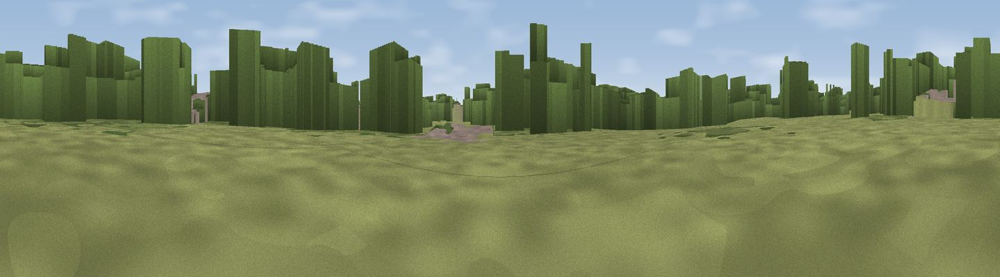

Viewpoint near Daimler Green
#43572 in England · top 85% of its area beats it · near Daimler GreenWhere it is
The exact computed spot (SP 31594 82344). Click the marker for map links.
The view, rendered

A 360° render of this exact spot computed from the terrain model, tree cover and land cover — summer colours, afternoon light, calibrated against photographs of famous viewpoints. Real trees, hedges and buildings will differ in detail.
The panorama
Grey silhouette: terrain skyline in each direction (720 bearings, Earth curvature and refraction included). Dashed green: skyline with trees (+15 m) and buildings (+8 m) as obstacles. Blue strip: how far the ground is visible on each bearing.
Where the view opens
Wedge length = distance to the farthest visible ground on that bearing (vegetation-aware). Rings at 10, 25 and 50 km.
What fills the view
36% woodland · 36% grassland · 17% built-up · 11% cropland
Angular shares of the visible panorama (visual magnitude), not map area. Landscape diversity 0.56 (0–1 Shannon).
Key numbers
More beautiful places nearby
The staircase of upgrades: each row has a higher view potential than everything closer. Driving times are estimates from straight-line distance, calibrated against real road routing — check an actual route before setting out.
| Place | Direction | Drive | Score |
|---|---|---|---|
| Viewpoint near Ash Green | NNE · 2 km | ~5 min | 20.7 |
| Wood End Hill | WNW · 6 km | ~13 min | 33.4 |
| Mount Jud | NNE · 11 km | ~21 min | 62.4 |
| Viewpoint near Ansley Common | N · 13 km | ~23 min | 69.0 |
| Viewpoint near Streetly | WNW · 30 km | ~47 min | 69.5 |
| Viewpoint near Northend | SSE · 32 km | ~49 min | 69.7 |
| Viewpoint near Northend | SSE · 32 km | ~50 min | 70.3 |
| Viewpoint near Stanton under Bardon | NNE · 34 km | ~52 min | 76.0 |
52.43816, -1.53667 · source: osm peak · position refined by local search. Computed location — check access rights before visiting.